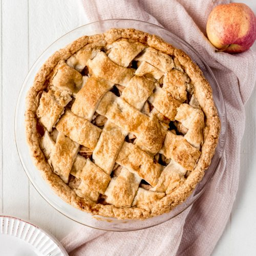

Apple Pie

A famous and tasty dessert.
Ingredients:
Pastry:
- 250g plain flour
- 25g caster sugar
- 2-3 tsp milk
- 125g butter, very cold and diced
- 2 large egg yolks
- Pinch of salt
- Medim sized pie tin
Filling:
- 315g red apples, peeled and diced
- 1 stalk rhubarb, diced
- 1 egg white, beaten
- 45g soft brown sugar, plus extra for sprinkling
- 2 tbsp caster sugar
- 45g butter, softened, plus extra for brushing
- 1 shot spiced rum
- 2 tsp cinnamon
- 1 tsp nutmeg
- 1/2 tsp allspice
- 1 tsp vanilla essence
- 1/4 cup pecans, chopped
Instructions:
- To make the pie crust, put the flour, sugar, salt, and butter into a food processor and blend until a breadcrumb consistency is reached. Add the egg yolk and whizz again for a moment, and finally the milk. Once the dough has formed, turn it out onto a lightly floured surface and work until it is smooth. Wrap in cling wrap and chill for half an hour minimum before using.
- Preheat your oven to 200C/400F and place the pie tin in to heat up.
- In a mixing bowl, combine all the filling ingredients except for the egg white and mix thoroughly.
- Dust your work surface with flour and roll out your pastry into a circle to fit your pie tin, leaving aside a small quantity of dough to make the top lattice. Fit the pastry to the tin, then spoon in the filling evenly. Sprinkle the top with brown sugar.
- Using a roller cutter or knife, cut out a lattice with the last of the dough and secure to the top of your pie. Brush all over with butter and the egg white to glaze.
- Bake for 30 minutes on the middle shelf. Leave to cool for 15 minutes before removing from the tin. Serve hot with a drizzle of custard or vanilla ice cream.